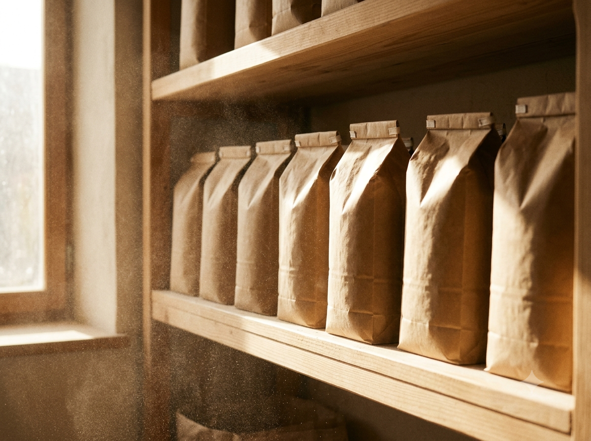

Alimentation & terroir
Moulin des Terres
Minoterie familiale de la Drôme, quasi invisible en ligne. En huit mois, leur compte Instagram est devenu le carnet de bord d'un moulin vivant : farine, saisons, paysans fournisseurs. Résultat : +280 % d'abonnés engagés et trois nouveaux boulangers artisans clients.